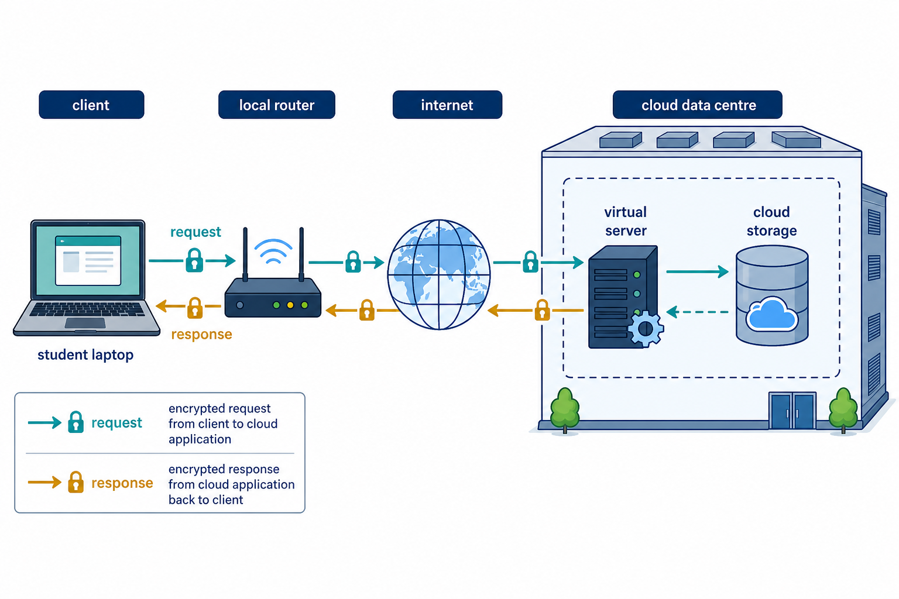

Cloud computing provides remote resources through a network
S2.06.A01
Visual overview
A cloud request crosses local and provider infrastructure

Visual transcript
- A client sends a request through its local router and the internet.
- A virtual server in a cloud data centre processes the request and can access cloud storage.
- The response returns to the client across the network.
Core explanation
Cloud computing provides storage, processing, applications or platforms from remote infrastructure accessed through a network. The organisation uses the service without operating every physical server locally.
A client sends a request across its local network and the internet to provider infrastructure. A virtual server or managed service performs the requested processing or storage operation and returns the result.
Cloud describes where computing resources are provided and accessed; it does not mean that data has no physical location. The resources run on physical provider or organisation-controlled hardware.
One cloud request
- ClientAuthenticates and requests storage, processing or an application
- NetworkCarries the request to remote infrastructure
- Cloud serviceAllocates resources and returns the result